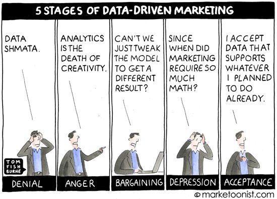
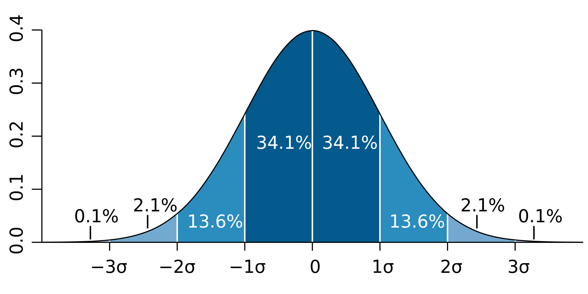
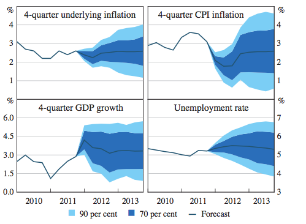

How to be
data-driven
(off a cliff)
Yanir Seroussi
yanirseroussi.com | @yanirseroussi | linkedin.com/in/yanirseroussi
Note: This talk is also available as a blog post
Motivation: It's time to accept reality and become data-driven
Here's how...
#1: Disregard uncertainty
#2: Treat unobserved quantities as observed
#3: Trust your data's correctness